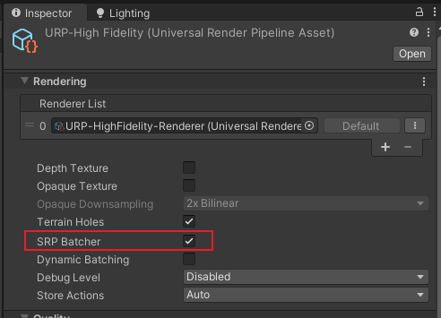
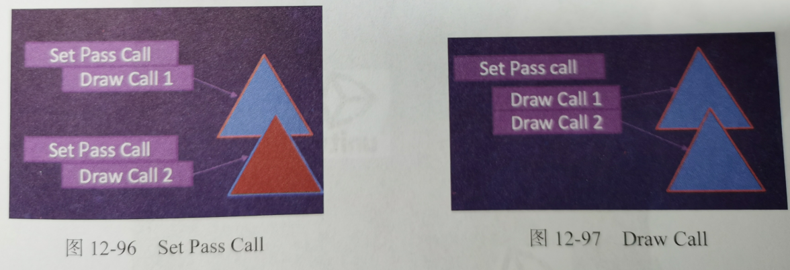
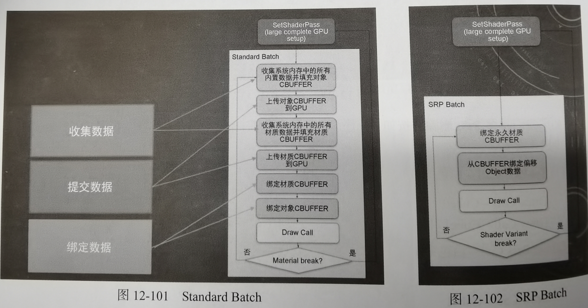
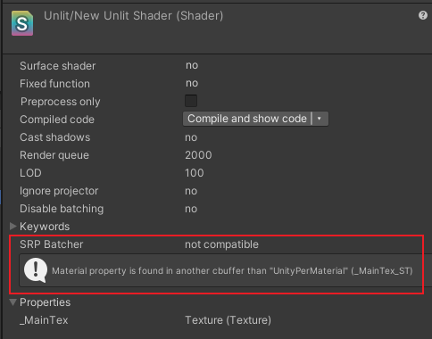

12. 渲染管线
12.3 SRP Batch
SRP Batch是URP一个重要的优化手段,它并不会减少Set Pass Call和Draw Call,但是会减少每个Draw Call的渲染消耗.

Set Pass Call和Draw Call
Set Pass Call是设置渲染需要的状态,例如纹理,顶点等等
Draw Call是按照配置进行渲染
而多Pass注定会导致多次调用Set Pass,这就是为什么URP取消了原本的多通道设计,为了优化提高性能

SRP Batch原理
通过将一些不变的数据放到GPU上减少CPU的设置渲染状态的处理,SRP的打断方式是有不同变体,也就是有不同Shader才会打断,材质的参数变化并不会打断

CBUFFER_START(UnityPerDraw)是最大的CBUFFER,里面记录了公用的转换矩阵,灯光参数,环境贴图,烘焙参数等等.
每个材质则需要我们自己指定一个CBUFFER,只要还是这些参数,也不会产生新的SetPassCall
CBUFFER_START(UnityPerMaterial)

判断材质是否支持SRP的方式就是这里是否显示compatible

助记小故事-三维打印机
助记小故事:
小熊有一台三维打印机,每次打印不同的模型,都需要设置材料要什么,打多快,怎么打.一大堆的设置,这个过程叫做Set Pass Call,然后设置好了最后按下执行就开始打印了,这个打印的过程叫做Draw Call,然后我要打10个模型,就要执行10次这个过程.现在提出了一个新的技术,SRP Batch,他会自动把这些基本不会改的东西都准备好,就像什么材料,多快,怎么打这些都有默认值固定了,我就只需要换不同的模型,然后开机,SPR会自动把Set Pass Call当中一样的部分固定下来(用上次设置好的参数),这样如果没有改变Set Pass Call部分,我们就只需要设置一次了,这就极大的简化了工作流程,很快就打完了10个模型.